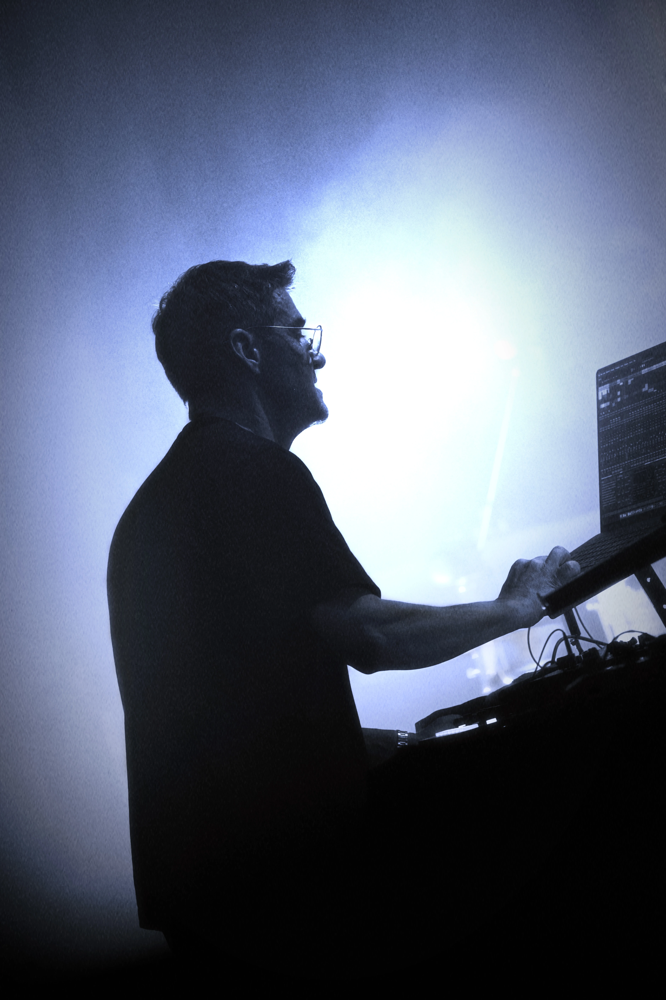

— It’s An Unbounded Exploration Of Perception, Vision, And Thought.
电子的音樂不僅僅是聲音
—— 它是一場無限漫遊於感知、視覺與思維之境的探險。
Project Reviews
►

❮
❯
❮
❯
❮
❯
Blank Joy is a music Promoter dedicated to restoring music to its purest essence.
We curate diverse live music experiences with talented artists from around the world, creating immersive events that forge genuine connections between creators and audiences.
Through these deeply engaging experiences, we invite everyone to feel the profound emotions of music and resonate with its soul.
Blank Joy | 無樂 是一個致力於將音樂回歸本質的音樂策劃推廣者。
我們與來自世界各地的才華藝術家合作，策劃多元化的現場音樂體驗，透過沉浸式演出搭建創作者與觀眾之間的真摯橋樑，
邀請每個人感受音樂深層的情感與靈魂共鳴。